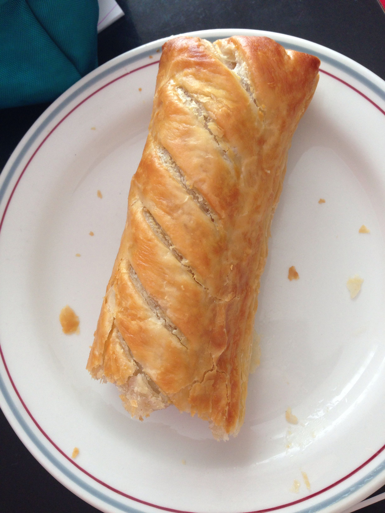

Gregg's Sausage Roll

Description
Gregg invented this pastry a few years ago, I think we all remember it well. Well now we're going to learn how to get our hands on one for ourselves.
It's crispy. It's pastry. It's hot. Sometimes it's pretty cold. But one thing's for sure, it'll leave crumbs on your shirt.
Ingredients
- 1-6 paper bags
- 1-6 sausage rolls
- anything that catches your fancy, you fat fuck
Steps
- Put your shoes and coat on (if you've got no shoes or coat, then I haven't got change, sorry).
- Open your front door.
- Make your way to your local Gregg's
- Greet the employees with a polite, but not too familiar, nod.
- Continue looking at the pastry selection for at least five seconds after you get to the front of the queue.
- Point to the sausage rolls when you order to ensure the employee knows what you're talking about.
- Redirect your eyes to the dessert display and test your willpower.
- Quickly ask for a single yum yum as well.
- Reduntantly ask if they accept contactless and put your card against the right side of the card reader.
- Grab your sausage roll and box of yum yums from the employee without seeming too eager.
- Begin eating as soon as you turn onto a quiet road.
All Recipes